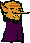

Bosses
Three fights, each asking something different. The first asks you to read it, the second to already be moving, and the third takes your best cards away for the length of the fight.
All three shrug off most knockback — 85% for the Sovereign and the Collector, 88% for the Revenant — applied where every push in the game goes through. A boss is also never pulled back toward you as a straggler, and no boss counts toward Full Bestiary — they have achievements of their own.
Every boss is tougher than the last. The Nth boss of a run carries ×1.75N health and ×1.15N damage on top of the ordinary wave ramp — see how enemies scale. Their speed stays on a gentler ramp than everything else, so the Revenant can always be outrun.
The rotation
A boss arrives every tenth wave and the order is fixed, cycling through 3 of them:
| Wave | Boss | |
|---|---|---|
| 10, 40, … | DREAD SOVEREIGN | A siege engine. It walks, and the fight is read from a distance. |
| 20, 50, … | PALE REVENANT | The opposite fight: it runs, and you have to be moving already. |
| 30, 60, … | THE COLLECTOR | The third fight, and a test of the build rather than the footwork: it takes your three best cards for as long as it lives. |
DREAD SOVEREIGN
Wave 10, and every 30th after
BossA siege engine. It moves at a walking pace and the whole fight is read from a distance — every attack announces itself long before it lands, and every one of them is survivable by moving.
| Move | What it does |
|---|---|
| Slam | A wide ground telegraph, then a shockwave. The radius and the wind-up are tuned together against one rule: running must work. From the edge of its own trigger range you can clear the circle on foot, without blink, in its 0.9s wind-up. |
| Bolt ring | A full ring of oversized bolts, one aimed at you — 8, 11 then 15 as phases fall. Big enough to walk between: a movement puzzle, not a damage check. The bolts fly at 495px/s, fast enough that a ring has to be read rather than strolled through. |
| Alternating rings | Three to five rings in quick succession, each turned half a gap from the one before, so the lane you stood in for one ring is a bolt for the next. You step sideways every ring. |
| Wall | A line of bolts fifteen wide, aimed at you, with a two-bolt hole in it. The line and its hole are drawn on the ground first and it fires exactly as drawn. The hole is never where you stand and never further than you can walk before it arrives, even from slam range. Two walls back to back in phase three. |
| Volley | A fast stream of five to nine single bolts, each re-aimed at you as it fires. Standing still eats every one; a steady sideways walk makes each miss behind you. |
| Spiral | Phase two onwards. Two arms of bolts wound out over a second and a half. The space between shots widens as they fly, so the way through is a little way out, not up close. |
| Summon | Calls bodies out of the ground, more each phase. Everything shares one cooldown, and a pattern's own length is added to it, so it never does two things at once. |
The telegraph lengths are the design. At nearly a second of wind-up, the Sovereign is asking you to read it. Compare the Revenant, which asks you to already be moving. The ranged patterns come in a fixed order per phase — ring, wall, volley, summon, alternating rings in phase one — so the fight can be learned, and each new phase starts its rotation from the top.
PALE REVENANT
Wave 20, and every 30th after
BossThe opposite fight, and the reason there are two. Nearly three times the Sovereign's speed, not one projectile, and every move a commitment you beat by moving rather than by standing somewhere clever.
| Move | What it does |
|---|---|
| Dash combo | Three, four, then five dashes in a row as phases fall, each with its own short wind-up and a gap between. The direction locks at the wind-up, so a combo is a sequence of dodges rather than one. Every dash runs its full length straight through trees and rocks, and the lane is drawn full length to match. |
| Leap | Goes airborne and comes down in a wide circle. The hitbox stays on the ground for the whole flight — only the sprite is lifted — so what you see and what hurts never disagree. |
| Forced leap | After two dash combos it must leap, even at close range. |
| Phantom Cross | Every third attack. It plants and marks two, three, then four lanes that all cross at your feet, a thousand pixels long. After the wind-up it slashes down the lanes itself, one after another: it vanishes, reappears at the end of a lane and streaks through in a tenth of a second, so the whole X lands in about half a second. It goes through scenery, and the boss and its lanes are drawn over the scenery for the whole attack. One hit however many lanes you stand in. Step out of the X between two lanes: the wind-up is long enough that walking between them clears the nearest lane even in phase three. |
| Reaper's Wheel | When you are close it plants, and a spectral scythe appears pointing just past you, with arrows round a 300 / 330 / 350px circle showing which way it will turn. Then it swings one full turn. The blade starts past you, so it reaches you last: running straight out of the circle always works, even from point blank. Running the way it turns carries you across the blade. |
Its speed is capped below the wizard's own, even at phase three, on purpose: kiting has to stay an answer, or the fight stops being about reading it and becomes a question about whether blink is up.
THE COLLECTOR

Wave 30, and every 30th after
BossThe one that tests your build rather than your footwork. It arrives and takes your three best cards — highest rarity first, then whichever has done the most damage this run — and holds them, circling its head and named under its health bar, until it dies. Then every one comes back.
| Move | What it does |
|---|---|
| The theft | On arrival. It takes anything the shop's Transmute could take back
exactly, and companions, which it holds rather than kills (the pet
simply stops until it is returned). Never Twin Orbs or a Contract, and
never a card that something else you own depends on. A stackable card
goes with all its stacks.
You are shown what it took: a THE COLLECTOR TAKES banner deals the three cards face up and chains them, each card circling its head wears a padlock, the health bar names them in their rarity colours, and your [U] upgrade list keeps them, dimmed and chained, marked held by the Collector, until it dies. |
| Coin fan | Aimed fans of gold coins — 5, 7 then 9 wide, two or three rounds, each round shifted half a gap. Unlike the Sovereign's patterns these die on trees: cover is a real answer here. |
| Snatch | A grab lane locked on you, drawn for 0.7s. Still inside it when it closes and you are hit and yanked across the floor to its feet. Measured from the same point and at the same width the lane is drawn. |
| Vault | Three, four then five chests dropped around you — one always on you — each bursting in a drawn circle after about a second. |
| Hoard | If you are within 200px when its next attack comes up, a ring of coins outward instead. It does not want you near. |
| Blink | It steps away to somewhere at range and clear of scenery, and the next attack follows quickly. It also blinks out if it is stuck against something. |
| Summon | Hired help, more each phase. |
It keeps its distance and strafes, like a merchant behind a counter: the Sovereign walks at you and the Revenant runs at you, so the third one makes you do the chasing. A gold-faced noble in a royal purple cloak, so it cannot be mistaken for either.